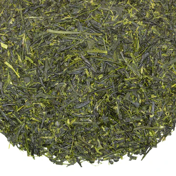
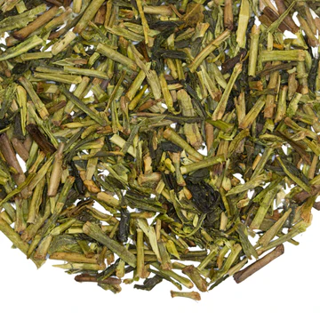
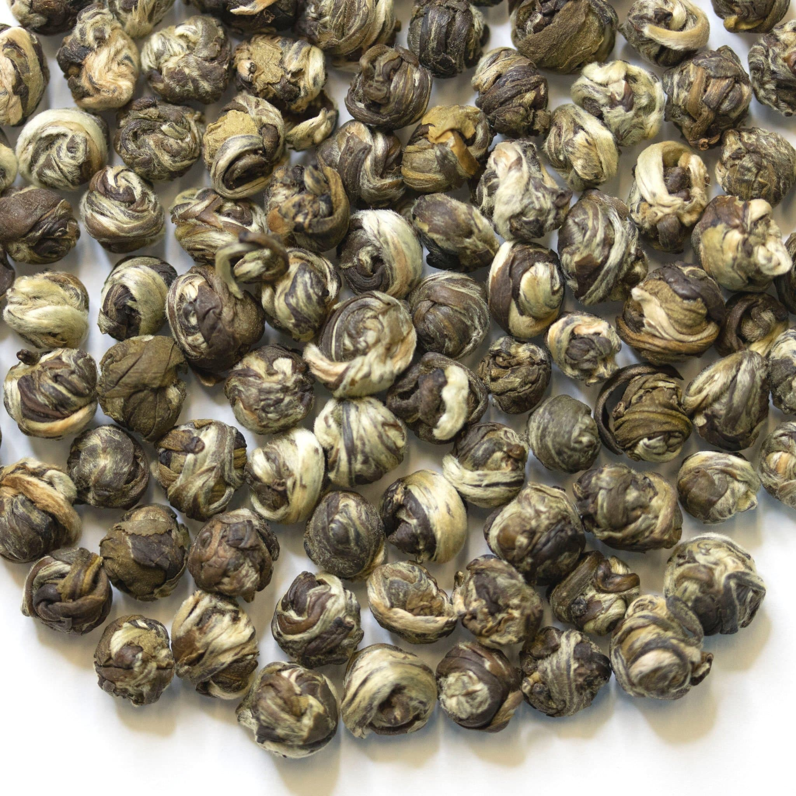
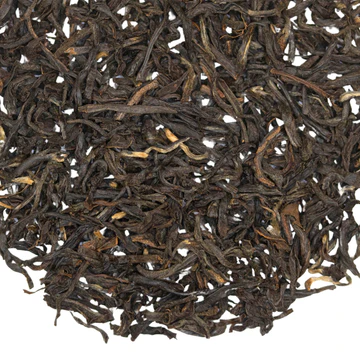
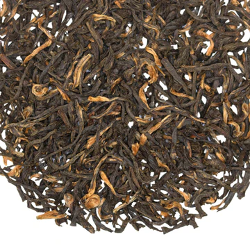
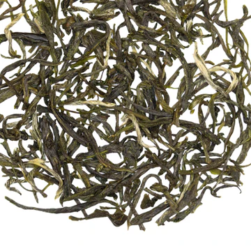

Julie's Teas |
At Julie’s Teas, we believe every cup tells a story. Whether you're a seasoned tea lover or just beginning your journey, we offer a world of flavors that will delight your senses. From rare, exotic teas sourced from the far corners of the globe to beloved classics steeped in tradition, we have something for every palate. |
Explore our collection, discover new favorites, and enjoy the perfect brew with Julie’s Teas. Savor the experience today!
Exotic Teas
Julie’s Teas proudly offers a curated selection of rare and exotic teas from around the world. Each blend has been carefully sourced from the finest tea-growing regions, bringing you a taste of adventure with every cup. Explore our unique collection, which includes:
|  | Darjeeling First FlushKnown as the "champagne of teas," this delicate and floral tea comes from the lush foothills of the Himalayas. |
Dragon Well Green TeaA famous Chinese tea with a fresh, sweet taste and a hint of chestnut, hand-harvested in the misty mountains of Zhejiang Province. |
 |
|  | Jasmine PearlsScented with jasmine blossoms, these hand-rolled pearls of green tea release a sweet, aromatic infusion with every steep. |
Our Timeless Tea favorites
At Julie’s Teas, we believe some classics never go out of style. Our popular tea collection features familiar favorites that have stood the test of time, bringing comfort and enjoyment with every sip. From rich, full-bodied black teas to soothing herbal blends, these timeless teas are perfect for any occasion:
|  | Earl GreyA beloved black tea infused with the uplifting scent of bergamot, offering a bright and citrusy flavor that’s perfect for mornings or afternoons. |
English BreakfastBold, robust, and malty, this traditional blend of black teas is a go-to for tea lovers everywhere. Enjoy it on its own or with a splash of milk. |
 |
|  | ChamomileKnown for its calming properties, our chamomile tea is made from whole dried flowers, offering a gentle, honey-like sweetness and a golden cup to help you unwind. |